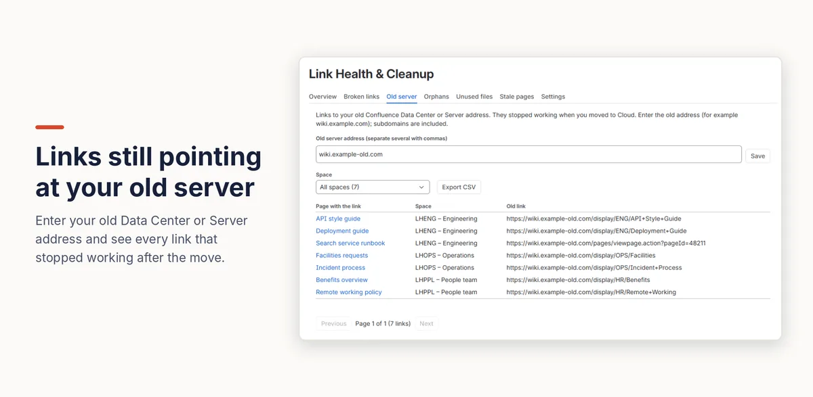

Fixing old links after moving Confluence from Data Center to Cloud
When you move from Confluence Data Center or Server to Cloud, Atlassian's tools update many links to point at the new site, but not all of them. Links written as a full web address to the old server keep pointing there, and stop working once it's switched off. To list every page that still links to the old address, use an app that keeps an index of your links.
With Confluence and Atlassian's tools
What Atlassian's link fixing covers
If old links are broken after a migration, Atlassian Migration Support can run a link fix on request. According to Atlassian's guide (updated July 2026), it covers Confluence links by page ID, page title or “pretty” address, short links, attachment and label links, and Jira issue links.
Where it falls short
- Other link patterns aren't fixed, and historical page versions, drafts and blog posts are out of scope.
- It's a manual request to Atlassian, run after the migration, not something you can re-run yourself.
- No list of what's left. Confluence has no report of the links that still point to the old address.
Every old-server link with Link Health & Cleanup
- A Confluence admin installs Link Health & Cleanup. It indexes every link on the site.
- Open Settings (the cog) → Link Health & Cleanup → Old server, enter your old address (for example
wiki.example.com; separate several with commas) and press Save. Subdomains are included. - The tab lists every page that still links to the old address, with the full old link. Filter by space or export the list as CSV, then update each link in the editor to point at the page's new home.
Run it after Atlassian's link fix to see exactly what's left. The list updates within minutes as pages are fixed.

Disclosure: Kitefold makes Link Health & Cleanup, so we're not neutral. The built-in options above are free and may be all you need.
Related guides
- How to find broken links in Confluence Cloud
- How to find orphan pages in Confluence
- How to find unused attachments in Confluence (and free up storage)
Checked against Confluence Cloud in November 2026. Confluence changes often; if something here no longer matches what you see, email support@kitefold.app and we'll update it.